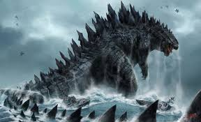
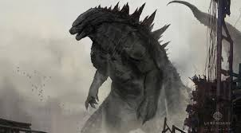
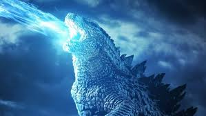
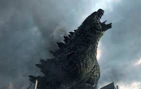

|  |  |
|  |  |
Форд Борди - військовослужбовець, який побував у багатьох гарячих точках, з яких йому вдавалося вибратися живим. Багато років тому він втратив свою матір, яка загинула в результаті атомного вибуху в Японії. Його батько всі ці роки намагається знайти правду, оскільки він упевнений, що в тому вибуху винні військові, які засекретили всі дані про той день, а зону вибуху закрили на карантин. Форд змушений був повернутися в Японію, щоб допомогти своєму батькові, але він навіть не підозрював, з чим їм доведеться зіткнутися. В ході власного розслідування їм стає відомо, що той атомний вибух стався не під час навчань, а був спрямований на знищення страшного монстра, з яким їм доведеться незабаром зіткнутися ...